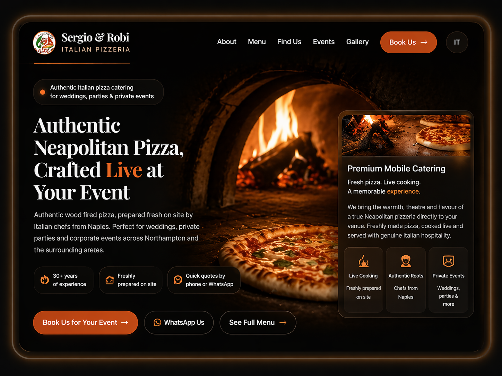
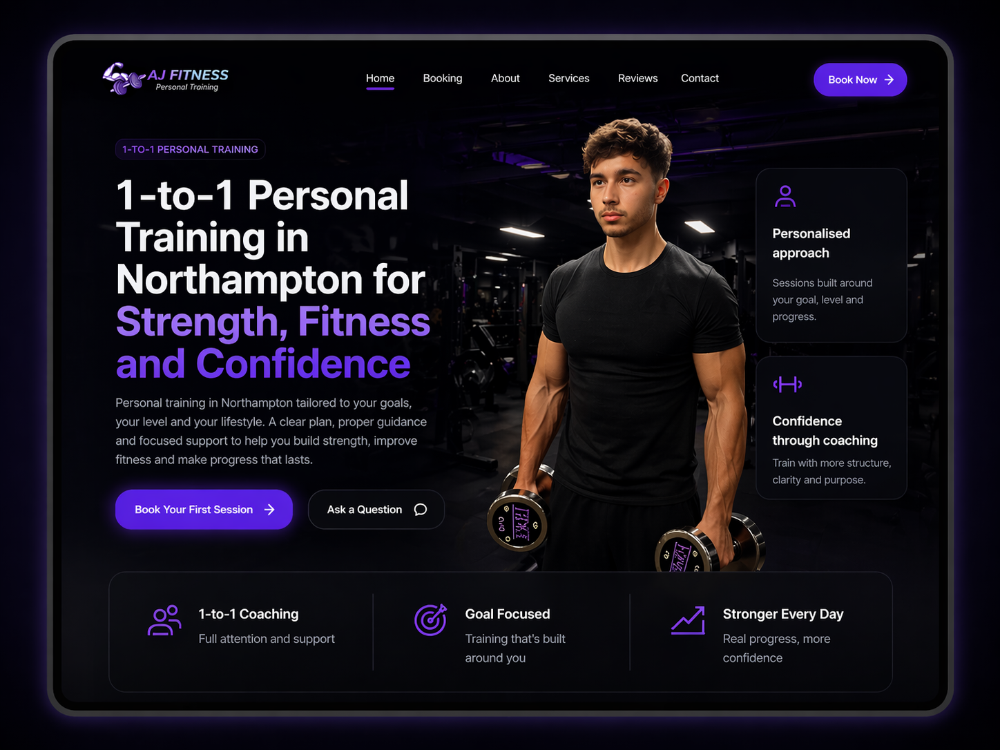
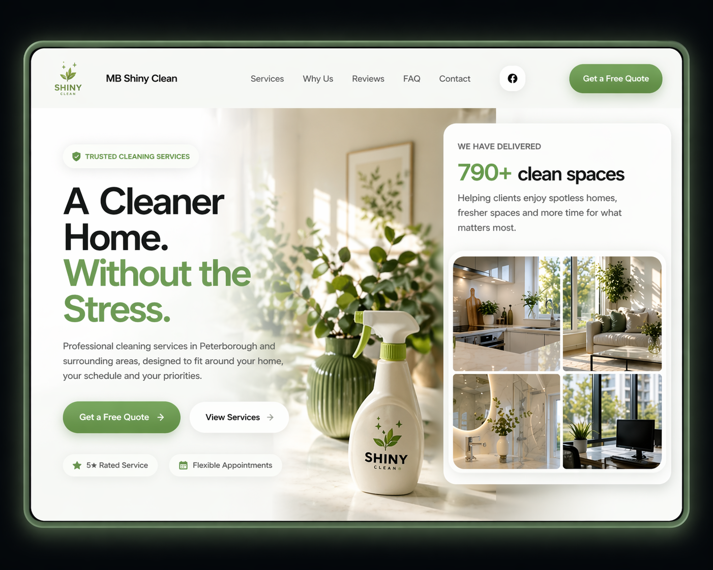
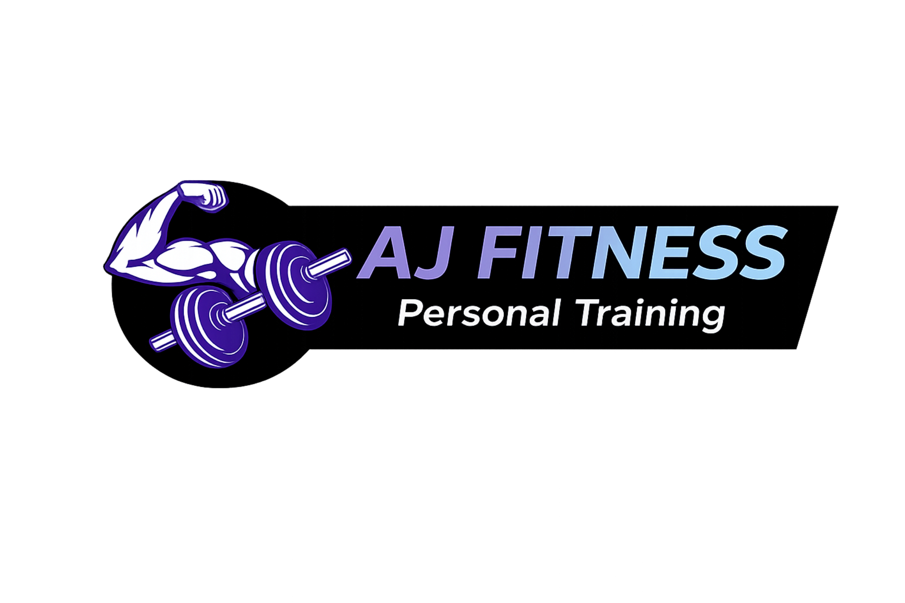
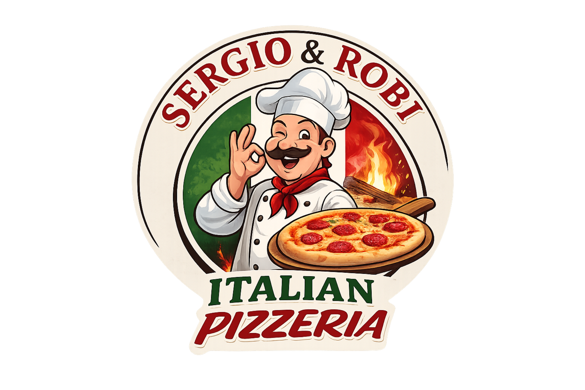

Catering premium
Sergio & Robi Pizzeria
Strona zaprojektowana tak, aby przyciągać klientów i wspierać rezerwacje wydarzeń.
Zobacz stronęRealizacje
Każdy projekt powstaje z myślą o wizerunku marki, przejrzystości oferty i większej liczbie zapytań od klientów.

Catering premium
Strona zaprojektowana tak, aby przyciągać klientów i wspierać rezerwacje wydarzeń.
Zobacz stronę
Strona fitness
Profesjonalna strona dla trenera personalnego skupiona na zaufaniu i zapytaniach klientów.
Zobacz stronę
Portfolio fotograficzne
Minimalistyczna strona, która eksponuje zdjęcia i buduje estetyczny wizerunek marki.
Zobacz stronę
Case study
Projekt MB Shiny Clean pokazuje, jak duży wpływ na odbiór firmy ma dobrze zaprojektowana strona.
Firmy, które mi zaufały
Opinie klientów
Realne opinie klientów, dla których przygotowałam strony wspierające markę i zapytania.

★★★★★
Strona wygląda świetnie i już przynosi więcej zapytań.

★★★★★
Profesjonalna strona, która podniosła poziom naszej marki.

★★★★★
Strona wygląda dokładnie tak, jak sobie wyobrażałam - elegancko, minimalistycznie i bardzo profesjonalnie. Wszystko zostało dopracowane w najmniejszych szczegółach.